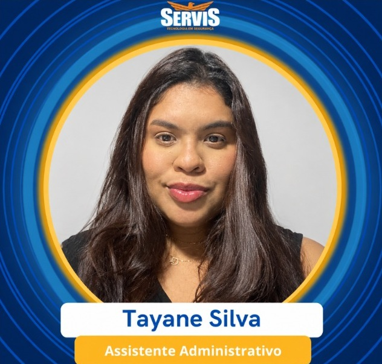
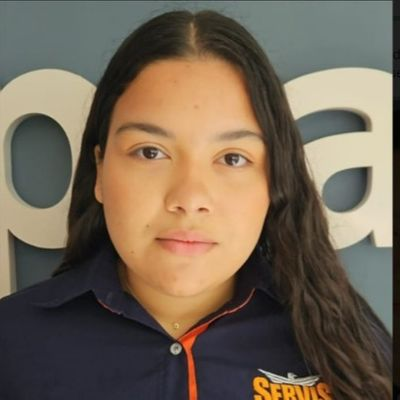

GESTÃO DO SUCESSO DO CLIENTERosely
Estratégia, indicadores, contratos, retenção, auditoria e escalonamento de casos críticos
Acesso restrito à equipe
Carteiras, O.S., pesquisas, pendências e rastreabilidade
Análise automática dos registros disponíveis no Supabase. Não é uma IA generativa conectada: os alertas usam regras verificáveis e são recalculados ao atualizar o painel.
Compromissos salvos no Supabase permanecem mesmo que o alerta inicial desapareça. Cobranças vencidas ou de hoje aparecem primeiro.
A equipe precisa manter os status e prazos atualizados para que os lembretes sejam confiáveis. O sistema não envia notificações fora da página.
Dados calculados por carteira; nenhuma pesquisa antiga precisa ser digitada novamente.
O.S. do período = abertas naquele mês, conforme data de criação. A contagem de concluídas representa as O.S. daquele período que estão concluídas atualmente; não é uma taxa histórica de fechamento por data de resolução.
Os alertas serão exibidos após o carregamento.
Os indicadores são calculados automaticamente a partir dos registros. Para corrigi-los, edite o registro de origem.
Ceará, Secopi, Manaus e Maranhão. Selecione a filial para visualizar sua carteira.
| Condomínio | Filial | Responsável | Supervisor | Técnico | Ações |
|---|
Pesquisas históricas e atuais, volume de atendimento e clientes em atenção.
| Responsável | Filial | Condomínios | Pesquisas | Nota média | Notas críticas | O.S. abertas | Pendências abertas |
|---|
| Condomínio | Responsável | Última nota | Motivo |
|---|
45 procedimentos de referência. Esta biblioteca é normativa e não contém registros editáveis no banco atual.
Atribua atividades às meninas, acompanhe providências, prazos e validação da gestão. Não se confundem com O.S. da Central.
| Condomínio / atividade | Responsável | Prioridade | Prazo | Próxima cobrança | Situação | Ações |
|---|
As O.S. da Central permanecem aqui. Demandas de Gestão são acompanhadas separadamente, logo abaixo.
Indicadores automáticos das O.S. disponíveis para seu perfil. O retorno ao síndico é contabilizado separadamente da conclusão técnica.
| Condomínio | Nº O.S. | Demanda | Prazo | Status | Última edição | Ações |
|---|
Transcreva apenas o consolidado do outro dashboard. Não é necessário cadastrar pesquisas por condomínio aqui.
Nota média: de 0 a 10; realizadas, pendentes, reclamações, pendências apontadas e elogios: quantidades. As categorias podem coexistir numa mesma pesquisa. Cada carteira tem um único fechamento por mês, que pode ser corrigido pela administradora. O lançamento mensal substitui a necessidade de pesquisar avaliações individuais neste painel.
| Carteira | Filial | Média do mês | Realizadas | Pendentes | Reclamações | Pendências apontadas | Elogios | % realizadas | Registro |
|---|
| Condomínio | Reclamação | Responsável | Prioridade | Status | Última edição | Ações |
|---|
Josy: Secopi e Manaus. Nicole: Maranhão. Para cadastrar ou editar condomínios das filiais, utilize Cadastro e distribuição de condomínios. Para tratar registros regionais, utilize Demandas e Pendências.
Registro gerado automaticamente pelo Supabase, identificado pela conta utilizada.
Estrutura de gestão, operação por carteira e fiscalização regional.
Estratégia, indicadores, contratos, retenção, auditoria e escalonamento de casos críticos
Atendimento, pesquisas, O.S., demandas e relacionamento da sua carteira. Fiscaliza Secopi e Manaus.
Execução e registro das atividades da filial; acompanhamento de Josy

Execução e registro das atividades da filial; acompanhamento de Josy

Atendimento, pesquisas, O.S., demandas e relacionamento da sua carteira. Fiscaliza Maranhão.
Execução e registro das atividades da filial; acompanhamento de Nicole
As responsabilidades de fiscalização aparecem separadas das atividades da carteira própria. O ranking acima usa apenas os registros disponíveis no Supabase e não deve ser interpretado como medida isolada de desempenho.
Responsável da carteira registra atendimento, pesquisa, demanda ou O.S.
CS responsável acompanha a solução e informa o condomínio. Josy ou Nicole fiscaliza as respectivas filiais.
Rosely recebe casos críticos, reincidências, risco de cancelamento e negociações estratégicas.
Registrar tratativa, retorno e conclusão para atualizar os indicadores do dashboard.
Salva em JSON os registros que sua conta pode visualizar.